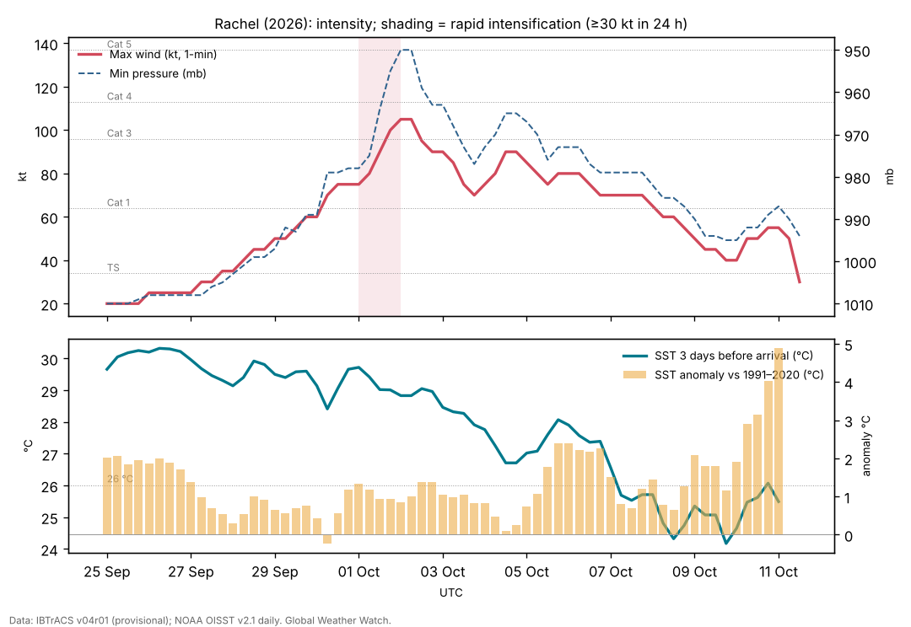

Hurricane Rachel (September–October 2026): a long-lived hurricane and a deadly remnant
Abstract
Rachel was a long-lived eastern Pacific hurricane whose most damaging effects came after it had stopped being a hurricane. It formed south of Mexico on 27 September, strengthened slowly through days of 15–20 kt northeasterly shear, intensified rapidly by 30 kt in 24 hours near Socorro Island and peaked at 105 kt (120 mph, Category 3) and 950 mb at 2 Oct 0000 UTC. It then remained a hurricane for six more days while drifting west over water that was unusually warm for the latitude (about 26 °C, +1.5 °C against normal), before a deep trough swept it northeast. As a post-tropical cyclone it crossed northern Baja California near Ensenada early on 11 October with winds near 50 kt and dissipated over the southwestern United States the same day. Flooding in the municipality of Ensenada killed eight people, and Rachel's waves, combined with a long-period swell, spring tides and sea levels already raised by El Niño, caused coastal flooding and erosion in Southern California.
Main findings
- Strengthening against shear. For four days Rachel's centre lay at the northern edge of its convection under about 20 kt of northeasterly shear NHC discussion 6, NHC discussion 10, yet it became a hurricane at 30 Sep 0600 UTC and then rapidly intensified, from 75 kt to 105 kt in 24 hours.
- Long hurricane life. Rachel spent 192 hours as a hurricane and produced 26.9 × 10⁴ kt² of ACE, as much as Simon. Repeated dry-air intrusions caused fluctuations but not collapse NHC discussion 32, NHC discussion 38.
- A strong cold wake. Moving slowly, Rachel cooled the sea under its track by up to 2.8 °C in the analysis, near 19.4°N, 110.2°W on 2 Oct 0600 UTC.
- Deadliest as a remnant. All eight deaths occurred in Ensenada, Baja California, after Rachel had become post-tropical; four of the dead were children.
- Compound coastal hazard. In Southern California, waves from Rachel met a long-period southerly swell and water levels running up to 1.5 ft above predictions.
1. Introduction
Rachel was the eighteenth tropical cyclone of the 2026 eastern North Pacific season and the second of four major hurricanes off southwestern Mexico between 22 September and 16 October. Its track, first parallel to Mexico and then west and northeast towards Baja California, linked the hyperactive tropical season to the coastal ocean off California, where El Niño had already raised sea level [14]. This paper reconstructs Rachel's life cycle and the chain of events that turned a weakening storm into a deadly one.
2. Data and methods
Track and intensity. Six-hourly positions, 1-minute maximum sustained winds and minimum pressures from IBTrACS v04r01 [1], downloaded on 24 October 2026. For 2026 these are provisional values carried over from the operational advisories (National Hurricane Center); the official best track, issued in the post-season report, can differ. Rapid intensification (RI) is an increase of at least 30 kt in 24 hours [2]. Accumulated cyclone energy (ACE) sums the squared 6-hourly winds at tropical-storm strength or above.
Ocean. Sea-surface temperature (SST) and its anomaly against 1991–2020 from NOAA OISST v2.1 daily [3], sampled at each 6-hourly position three days before the storm arrived, so that the storm's own cooling is excluded; the change from three days before to three days after gives the cold wake. OISST is a 0.25° analysis and smooths very small wakes.
Atmosphere. Wind shear and mid-level humidity are taken from the forecasters' own analyses in the advisories and discussions (which use the SHIPS model and satellite estimates), quoted with date and time. In addition, the deep-layer (200–850 hPa) vertical wind shear was computed from ERA5 (Hersbach et al. 2020, in the references) as the difference of the winds averaged over a 200–800 km ring around each position, using daily means of 00 and 12 UTC on a 2.5° grid, with data to 18 October 2026. This coarse estimate captures the large-scale shear but not shallower or mid-level shear, which forecasters sometimes cite. The Madden–Julian oscillation (MJO) is described by the real-time RMM index [4] (phase and amplitude; amplitude ≥ 1 means an active MJO). ENSO values are NOAA CPC indices (RONI JAS 2026 +1.69 °C; weekly relative Niño 3.4 +2.4 °C in mid-October).
Impacts. Deaths, damage and observations are taken from official statements where available and otherwise from wire-service reports, each cited; figures are preliminary.
3. Life cycle

Genesis and a sheared start (25–30 September). IBTrACS follows the precursor from 25 Sep 0000 UTC near 9.2°N, 92.6°W. The depression formed early on 27 September; SHIPS guidance suggested shear would limit development at first NHC discussion 1. For the next three days Rachel endured about 20 kt of northeasterly shear, with its low-level centre near the northern edge of the convection NHC discussion 4, NHC discussion 6, NHC discussion 10. It strengthened anyway, helped by bursts of very deep convection with cloud tops near −90 °C NHC discussion 10. On 29 September a NOAA P-3 research flight, with an uncrewed aircraft launched into the storm, measured 66 kt at 700 mb NHC discussion 11.
Peak near Socorro Island (30 September – 2 October). Rachel became a hurricane at 30 Sep 0600 UTC. As the shear relaxed it intensified from 75 kt to 105 kt between 0000 UTC on 1 and 2 October, with a ragged eye inside cloud tops near −85 °C NHC discussion 20, and passed closest to Socorro Island on 2 October NHC discussion 22. Dry air already affected a loose eyewall NHC discussion 22.
Six days as a weakening hurricane (2–8 October). A ridge to the north steered Rachel slowly west NHC discussion 26, NHC discussion 30. Its eye cleared and filled several times as northeasterly shear brought dry air into the northern side NHC discussion 32, NHC discussion 34, NHC discussion 38, NHC discussion 42. Winds varied between 65 and 90 kt; Rachel fell below hurricane strength only on 8–9 October.
Recurvature and post-tropical transition (8–11 October). A deep mid- to upper-level trough approaching the west coast of the United States slowed Rachel, then turned it northeast and accelerated it NHC discussion 44, NHC discussion 48, NHC discussion 49. Under 25–35 kt of southwesterly shear its convection became shallow and frontal in structure NHC discussion 54, and at 0300 UTC on 11 October it was declared post-tropical NHC discussion 56. Its winds increased again to 50–55 kt through baroclinic interaction with the trough. The centre crossed northern Baja California near 31.8°N, 116.3°W around 0600 UTC on 11 October and the system dissipated over the southwestern United States NHC discussion 58.
| Quantity | Value |
|---|---|
| Source of winds and pressures | NHC operational values |
| First and last fix (UTC) | 25 Sep 0000 UTC – 11 Oct 1200 UTC |
| First fix position | 9.2°N, 92.6°W |
| Peak 1-minute wind | 105 kt (120 mph, 195 km/h), Category 3, 2 Oct 0000 UTC near 19.4°N, 109.6°W |
| Lowest pressure | 950 mb |
| Largest 24-hour increase | 30 kt (1 Oct 0000 UTC to 2 Oct 0000 UTC) |
| Time at tropical-storm / hurricane / major strength | 330 / 192 / 18 hours |
| Accumulated cyclone energy (ACE) | 26.9 × 10⁴ kt² |
| Track length and mean speed | 5,707 km at 14.4 km/h |
| Post-tropical crossing of northern Baja California | about 0600 UTC 11 Oct near 31.8°N, 116.3°W, ~50 kt (IBTrACS) |
IBTrACS v04r01, provisional (operational NHC values). ACE includes the post-tropical fixes of 10–11 October as stored in IBTrACS.
4. Environment
Ocean. Up to the peak the sea ahead of Rachel averaged 29.6 °C, +1.1 °C above normal. During its long westward drift on 6–9 October the water was about 25.8 °C, cooler but still +1.5 °C above normal for the season and latitude, part of the warm anomaly off Baja California. Near Baja California on 11 October the sea was 25.5 °C, +4.9 °C above normal: too cool to sustain a hurricane, but an exceptional marine heatwave. Rachel's slow motion produced the strongest cold wake of the storms in this batch: up to 2.8 °C [5]. The wake it left near 14°N, 102°W on 29 September was still visible two weeks later under Trudy (see the Trudy paper).
Shear and moisture. Northeasterly shear of 15–20 kt persisted from 27 September to 30 September NHC discussion 6, NHC discussion 14; dry air intruded repeatedly after the peak NHC discussion 26, NHC discussion 32, NHC discussion 34; strong southwesterly shear accompanied the transition NHC discussion 54.
ERA5 shear. Deep-layer shear around Rachel was 17–26 kt from 27 to 30 September, matching the forecasters' estimates of about 20 kt, and fell to 12 kt on 1 October, the day of rapid intensification. During the long westward drift it was 2–10 kt, so dry air and cooler water, not shear, wore Rachel down; it reached 42 kt during the post-tropical transition (Figure 1).
MJO. RMM phase 2 (amplitude 0.9) at genesis and phase 2 (1.2) during rapid intensification [6]; not tested further.
5. Impacts
Baja California. Heavy rain from Rachel's remnant caused flooding and landslides in the municipality of Ensenada over the weekend of 10–11 October and knocked out power; a stream in the Buena Vista community overflowed, sweeping away vehicles, animals and a cabin [11]. By 15 October the death toll was eight, all in Ensenada, four of them minors, with two people still missing [12]. Soldiers rescued 32 people, including 13 children, by helicopter from an orphan camp near Ensenada; a father and son fishing from San Felipe on the Gulf of California were missing [11].
Southern California. The hurricane centre warned that waves from Rachel, combined with an incoming long-period southerly swell, would produce life-threatening surf and rip currents, and that major coastal flooding was already occurring, with water levels running up to 1.5 ft above predictions; flooding and erosion were expected to worsen as the highest waves coincided with high tides NHC discussion 54. In Long Beach on 9 October the surf broke through a seawall on the Alamitos Peninsula; homes on Seaside Walk were evacuated and inspectors red-tagged eight buildings [13]. The elevated water levels reflect El Niño's coastally trapped wave and the warm ocean along the coast [14]. The remnant then brought a risk of flash flooding to the southwestern United States NHC discussion 58.
6. Climate context
Rachel's long life at 20°N and its deadly remnant both depended on an ocean that was much warmer than usual off western Mexico and Baja California, during a very strong El Niño [8] and an exceptionally active season [7]. The Southern California coastal flooding was a compound event: storm waves, a distant swell, spring tides and a sea level raised by El Niño. No attribution study exists.
7. Uncertainties
- Provisional track and intensities; the post-tropical crossing point and time are approximate.
- The deaths were caused by flash flooding from the remnant; rainfall totals were not available.
- The size of Rachel's contribution to the Southern California coastal flooding, relative to the swell, tides and El Niño sea level, was not quantified.
8. Conclusion
Rachel strengthened despite persistent shear, peaked briefly as a major hurricane over open water and lingered as a hurricane for almost a week over an ocean warmed by El Niño. Its greatest harm came later, as a fast-moving post-tropical cyclone whose rain flooded Ensenada and whose waves reached a Southern California coast already running high. The case shows why post-tropical remnants deserve the same attention as the hurricane itself.
Media evidence (links)
Videos, photographs, satellite images and news reports that document the storm. They are supporting evidence only: the analysis above does not rely on them, and the material belongs to its publishers, so it is linked rather than copied. Press videos and social-media clips are not independently verified.
| Type | What it shows | Source | Link |
|---|---|---|---|
| Video and photos | Surf breaks through a seawall on the Alamitos Peninsula, Long Beach; homes evacuated, 8 buildings red-tagged (9 Oct) | NBC Los Angeles | www.nbclosangeles.com |
| Satellite imagery | Radar-satellite (SAR) winds on 8 and 11 Oct and a GOES-18 infrared animation of the transition | CIMSS Satellite Blog | cimss.ssec.wisc.edu |
| News (Spanish) | Rachel's waves damage homes in California; El Niño context (12 Oct) | El Imparcial | www.elimparcial.com |
| News | Floods in Ensenada; rescues near the city (13 Oct) | AP via ITV News | www.itv.com |
| Official graphics | Forecast cones, wind field and wind history | NHC archive | www.nhc.noaa.gov |
Evidence table
| Factor | Observed conditions and timing | Proposed role | Evidence type | Confidence | Key sources |
|---|---|---|---|---|---|
| ERA5 deep-layer shear | 17–26 kt on 27–30 Sep; 12 kt on 1 Oct | Delayed development; its relaxation allowed RI | Reanalysis (ERA5) | High | [9] |
| Warm ocean | 29.6 °C (+1.1) before the peak; 25.8 °C (+1.5) on 6–9 Oct | Allowed strengthening and a long hurricane life | Observed (OISST) | High | [3] |
| Northeasterly shear | ~20 kt, 27–30 Sep | Slowed early development | Operational analysis | High | [10] |
| Dry-air intrusions | Repeated after the peak | Caused fluctuations and slow weakening | Satellite interpretation (NHC) | Medium | [10] |
| Mid-latitude trough | Approached the US west coast 8–10 Oct | Recurvature, acceleration and post-tropical transition | Operational analysis | High | [10] |
| Marine heatwave off Baja California | SST anomaly +4.9 °C on 11 Oct | Moisture supply to the remnant (inferred) | Observed SST; mechanism inferred | Low | [3] |
| Elevated sea level and swell | Water levels up to 1.5 ft above predictions | Compound coastal flooding in Southern California | Observed (NHC statement) | High | [10] [14] |
References
- Knapp, K. R., M. C. Kruk, D. H. Levinson, H. J. Diamond and C. J. Neumann (2010). The International Best Track Archive for Climate Stewardship (IBTrACS). Bulletin of the American Meteorological Society 91, 363–376. Data: IBTrACS v04r01, NOAA NCEI (2026 positions provisional). doi:10.1175/2009BAMS2755.1 [bibliographic record; data read]
- Kaplan, J., and M. DeMaria (2003). Large-scale characteristics of rapidly intensifying tropical cyclones in the North Atlantic basin. Weather and Forecasting 18, 1093–1108. doi:10.1175/1520-0434(2003)018<1093:LCORIT>2.0.CO;2 [abstract read]
- Huang, B., et al. (2021). Improvements of the Daily Optimum Interpolation Sea Surface Temperature (DOISST) Version 2.1. Journal of Climate 34, 2923–2939. Data via NOAA PSL. doi:10.1175/JCLI-D-20-0166.1 [abstract read; data read]
- Wheeler, M. C., and H. H. Hendon (2004). An all-season real-time multivariate MJO index: development of an index for monitoring and prediction. Monthly Weather Review 132, 1917–1932. doi:10.1175/1520-0493(2004)132<1917:AARMMI>2.0.CO;2 [abstract read]
- Price, J. F. (1981). Upper ocean response to a hurricane. Journal of Physical Oceanography 11, 153–175. doi:10.1175/1520-0485(1981)011<0153:UORTAH>2.0.CO;2 [abstract read]
- Maloney, E. D., and D. L. Hartmann (2000). Modulation of eastern North Pacific hurricanes by the Madden–Julian oscillation. Journal of Climate 13, 1451–1460. doi:10.1175/1520-0442(2000)013<1451:MOENPH>2.0.CO;2 [abstract read]
- Colorado State University, Department of Atmospheric Science: real-time tropical cyclone season statistics (ACE and storm counts to date by basin), read 22–23 October 2026; site copy data/ace_season.csv. https://tropical.atmos.colostate.edu/Realtime/ [data read]
- Global Weather Watch (2026). The 2026 El Niño against 1982–83, 1997–98 and 2015–16: a preliminary comparison (Paper 4). enso-2026.html [own analysis]
- Hersbach, H., et al. (2020). The ERA5 global reanalysis. Quarterly Journal of the Royal Meteorological Society 146, 1999–2049. 2026 data: Copernicus Climate Change Service Climate Data Store (u, v at 850 and 200 hPa, to 18 October 2026). doi:10.1002/qj.3803 [full text read (open access); data processed]
- National Hurricane Center: Hurricane Rachel (EP182026) advisory archive, forecast discussions 1–58, 27 September – 11 October 2026 (US Government, public domain). Text copies in data/tc2026/nhc/RACHEL/. https://www.nhc.noaa.gov/archive/2026/RACHEL.shtml [read in full]
- Associated Press (2026). Death toll rises to 6 as Hurricane Simon and Rachel remnants unleash floods in Mexico. 13 October 2026 (via ITV News). https://www.itv.com/news/2026-10-13/hurricane-remnants-unleash-deadly-floods-in-mexico-killing-at-least-6 [read]
- Reuters/Bernama (2026). Death toll from Tropical Storm Rachel rises to 8 in northwestern Mexico. 16 October 2026 (via The Star). https://www.thestar.com.my/news/world/2026/10/16/death-toll-from-tropical-storm-rachel-rises-to-8-in-northwestern-mexico [read]
- NBC Los Angeles (2026). Evacuation order issued for some beachfront homes as damaging surf slams Long Beach. 9 October 2026. https://www.nbclosangeles.com/weather-news/long-beach-surf-waves-shorline-damage/3953709/ [read]
- Global Weather Watch (2026). El Niño's coastal wave reaches California (event log; Los Angeles tide-gauge residuals, NOAA CO-OPS). events.html [own analysis]